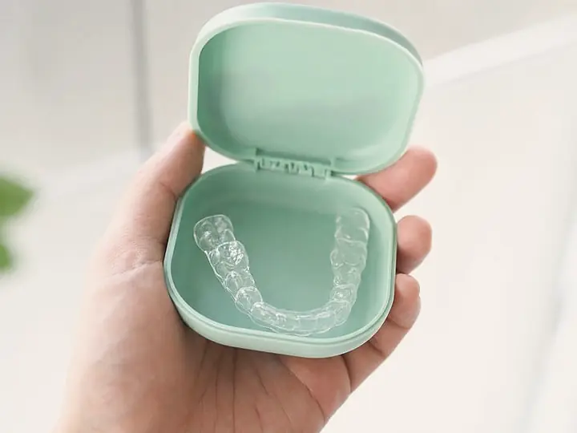

Retainers & retention
Retainers in Anthem, for finishing treatment and for teeth that already moved
Fitted retainers at the end of treatment, replacements for a retainer that was lost or broken, and a straight answer if you had braces years ago somewhere else and your teeth have shifted since. You do not have to have been a patient here.
Or book a free consultation with Dr. Romans.

Why you’re here
Teeth move for life, and retention is how a result holds
Nobody enjoys hearing it, so here it is plainly. Teeth keep drifting for as long as you have them, whether or not braces were ever involved. Retention is not a sentence you serve and finish. It is the part of treatment that never quite ends, and it is the difference between a result you keep and one you pay for twice.
Two kinds of people read this page. Some are near the end of treatment here and want to know what comes next. Others finished braces somewhere else years ago, stopped wearing the retainer at some point, and have watched the front teeth creep back. Both are welcome, and the second group is not a lost cause.
Ask Dr. Romans about your case →What retention involves
Retainers made, checked and replaced in Anthem
- Retainers made from a digital scanScanned rather than pressed in impression material, so nothing is held in your mouth while it sets.
- Bonded and removable, and often bothA fixed wire behind the front teeth, a removable retainer over the arch, or the pair working together. Dr. Romans recommends one at the finish and explains why.
- Replacements for anyone, treated here or notLost, cracked, warped in a hot car, or eaten by the dog. A new one starts with a fresh scan of where the teeth sit today.
- Retention checks with the orthodontistThe same board-certified orthodontist who plans treatment is the one who checks the fit afterwards. There is no handoff at the end.
- Relapse assessed honestlyIf the teeth have moved past what a retainer can hold, you will be told that at the consultation rather than sold a retainer that will not seat.

What to expect
A short visit, and nobody scolding you
Most retainer visits are quick. You come in, the fit gets checked, the wear schedule gets adjusted if your bite has settled, and you leave. If you stopped wearing yours three years ago, say so. It is the most common thing we hear and it changes the plan, not the tone of the conversation.
The office is Suite D120 on W. Anthem Way, ground level, with reserved parking at the door. No garage and no elevator between the car and a ten minute check.
Request a call back →Meet Dr. Nicholas Romans, DMD, MSD
The orthodontist who fits your retainer is the one who planned your bite

- Board-certified orthodontist
- DMD, MSD
- More than 7 years dedicated to orthodontics, including advanced specialty training
Dr. Romans owns this practice and treats every patient in it himself. Retention is the stretch of care most often handed to someone else, and here it is not. The person who planned the bite is the person who tells you how to keep it.
If your treatment happened at another office, that is fine. Bring the old retainer if you still have it, and he will tell you what is holding and what has moved.
Read Dr. Romans’s background →No obligation, no health questions
Prefer us to call you?
Leave a number and we will call you back to talk through retainers, replacements, or teeth that have shifted since your braces came off. Nothing about your health goes in the form. We cover all of that on the call.
[CONFIRM: call-back response time]
Rather just call? (623) 320-1222. Office hours: Monday to Wednesday and Friday, 8am to 5pmSome Thursdays as well, so it is worth calling to check.
Dr. Romans has a way of explaining things clearly and honestly. You never feel rushed, and it’s obvious he wants people to make informed decisions about their care.
Bijan Shemirani, Google review
Questions we get asked